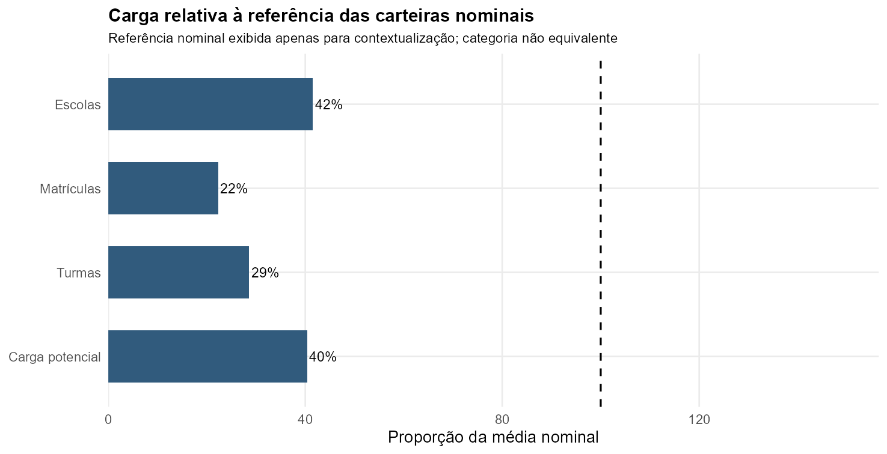
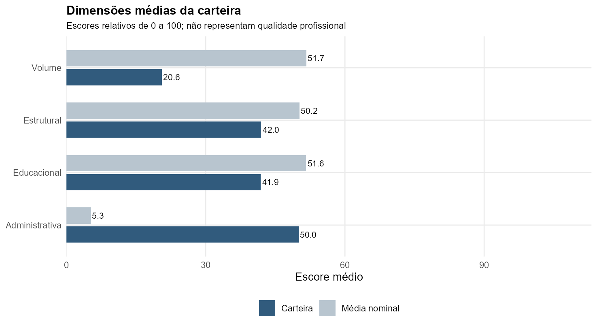
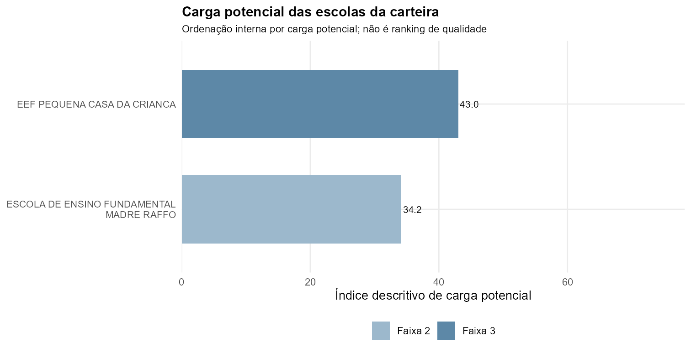
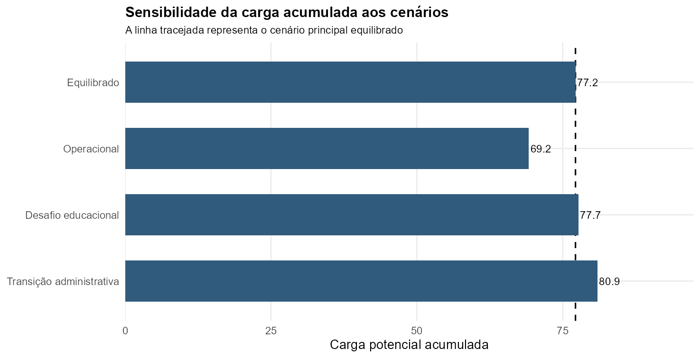

| Indicador | Valor observado | Leitura |
|---|---|---|
| Participação nas escolas da rede | 3,6% | Parcela das 56 escolas vinculada à categoria |
| Participação nas matrículas | 2,0% | Parcela das matrículas dos anos iniciais da rede analisada |
| Participação nas turmas | 2,5% | Parcela das turmas dos anos iniciais da rede analisada |
| Carga em relação à média nominal | 0,40× | |
| Intensidade média em relação à referência | 0,97× | |
| Maior escola na carga da carteira | EEF PEQUENA CASA DA CRIANCA | Índice 43,0 |
| Concentração na maior escola | 55,7% | Parcela da carga total da carteira concentrada na unidade de maior índice |
| Concentração nas duas maiores | 100,0% | Deve ser interpretada junto ao número de escolas da carteira |



| Condição | Escolas |
|---|---|
| Faixa superior de carga potencial | 0 |
| Faixas intermediária superior ou superior | 1 |
| Complexidade administrativa | 2 |
| Interpretação cautelosa do índice | 0 |
| Sensibilidade elevada aos pesos | 2 |
| Painel 2025–2026 incompleto | 0 |
| Participação de 2026 abaixo de 80% | 0 |
| Ordem interna | Escola | Matrículas | Índice | Faixa relativa | Volume | Estrutural | Educacional | Administrativa | Alertas |
|---|---|---|---|---|---|---|---|---|---|
| 1 | EEF PEQUENA CASA DA CRIANCA INEP 43105416 | 245 | 43,0 | Faixa 3 — intermediária superior | 24,5 | 52,5 | 55,0 | 40,0 | Complexidade administrativa; Sensível aos pesos |
| 2 | ESCOLA DE ENSINO FUNDAMENTAL MADRE RAFFO INEP 43105300 | 159 | 34,2 | Faixa 2 — intermediária inferior | 16,6 | 31,4 | 28,7 | 60,0 | Complexidade administrativa; Sensível aos pesos |

| Cenário | Carga acumulada | Índice médio | Posição de carga* | Mudança frente ao equilibrado | Faixa relativa* |
|---|---|---|---|---|---|
| Equilibrado | 77,2 | 38,6 | Não aplicável | Não aplicável | |
| Operacional | 69,2 | 34,6 | Não aplicável | Não aplicável | |
| Desafio educacional | 77,7 | 38,8 | Não aplicável | Não aplicável | |
| Transição administrativa | 80,9 | 40,5 | Não aplicável | Não aplicável |